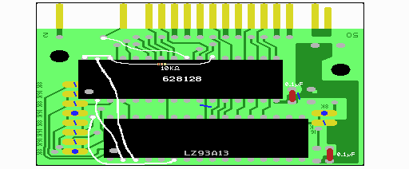
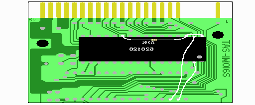

７ ＳＲＡＭの半田付け及び配線
いよいよ半田付けです。結構楽しいです。各チップの向きなどは、実体図を参考にして下さい。
ＳＲＡＭの３−３０番ピンが、ＲＯＭのあった場所の１−２８番ピンに収まるようにとりつけます。
ＳＲＡＭの１、２、31、32番ピンは浮くというか、はみ出る格好になります。
まず、表の６２８１２８の３−３０番ピンを半田付けします。
次に、裏の６２８１２８の足が上を向いている３−２１、２３−３０番ピンを半田付けします。
２２番ピン同士は付けないことに注意して下さい。多目の半田で表の足と一緒にくっつけます。
足を上に向けなかった人もほぼ同じです。ただ、ピンの足が長くて邪魔になるので、短くカットする必要がありますす。
取り付けた時に裏の６２８１２８は型番が読めなくなるようになります。方向を間違えない様に気を付けましょう。
これでＳＲＡＭの３〜15、17〜21、23、25〜28、30番ピンの接続が完了しました。ちなみに１番ピンは使いません。
30番はCSで、基板では５Ｖがつながっていますが、この CSはここでは５Ｖにしておけばいいので、そのままつなげてかまいません。
ここのCS(30番ピン)は、後ででてくる/CS*(22番ピン)とは別の信号です。
配線は回路図や実体図をよく見て行ってください。回路図では、赤い線でかかれた配線です。
ＳＲＡＭの２２番ピンと３０番ピンの間に表から抵抗を付けます。
裏表両方のＳＲＡＭについて行ってください。
ＳＲＡＭの２２番ピンと５Ｖの間に抵抗をつけるのであれば、どこのＶＤＤ（５Ｖ）とつなげてもかまいません。
これはＭＳＸの電源を切ったときに、/CS*をHighとし、書き換え等が起こらないようにするものです。
これがないと、電源を切ったときにデータが壊れる恐れがあります。
回路図では、/CS*信号の上に三角印があって10Kとかかれている部分です。
ＳＲＡＭの30番ピンと32番ピンをつなぎます。ＳＲＡＭに５Ｖの電源を供給します。
これはＩＣの足の加工によってできているはずです。一応、両側のＳＲＡＭについて確認しておいてください。
ＳＲＡＭの３１番ピンとＬＺ９３Ａ１３の３番ピンを繋ぎます。これでA15ができます。これも両側のＳＲＡＭに付けます。
ＳＲＡＭの２番ピンとＬＺ９３Ａ１３の２番ピンを繋ぎます。これでA16ができます。これも両側のＳＲＡＭに付けます。
ＬＺ９３Ａ１３の６番ピンを基板左側の半月状部分の右側、下から3&4番目と繋がるように配線します。実体図をよく見てやってください。
これでＳＲＡＭの/WR信号ができます。
実体図に従って、ＳＲＡＭの２４番ピン(/OE)とＭＳＸ本体へのコネクタ１４番(/RD)を繋ぎます。
これでＳＲＡＭの/OEができます。

図３ ＳＲＡＭ周りの配線（表側）

図４ ＳＲＡＭ周りの配線（裏）
基板の裏面の図ではＴＡＳ−１Ｍ０１６Ｓと描かれていますが、ＴＡＳ−１Ｍ００８Ｓでも同じです。
この説明も分からなくても構いません。ここでは、ＳＲＡＭがどのように使われているかを説明します。
資料を見てもらえれば分かる通り、LZ93A13からはバンク番号の最上位ビットの信号(B7)がありません。
バンク00〜7Fと80〜FFを区別するために、読み込み時は/OExx-xx、書き込み時は/WE80-FFを使います。
これにより読み込みは/OExx-xx指定により自由に行えますが、書き込みはバンク80-FFのみに限定されます。
似非RAMではバンク00-7Fと80-FFは同じで、システム部はバンク00-0x(80-8x)、ディスク部は0x+1〜7F(8x+1〜FF)となっています。
ＭＳＸ起動時に読まれるよう、システム部はバンク00-0xで使われますが、ディスク部は読み書きできるように8x+1-FFで扱われます。
そのためにＳＲＡＭの/OEには/RDをいれ、読む際にはバンク00〜7Fでも80〜FFでも読めるようになっているわけです。
(xはDOS1インストール時1、DOS2時は7かそれ以上です。）